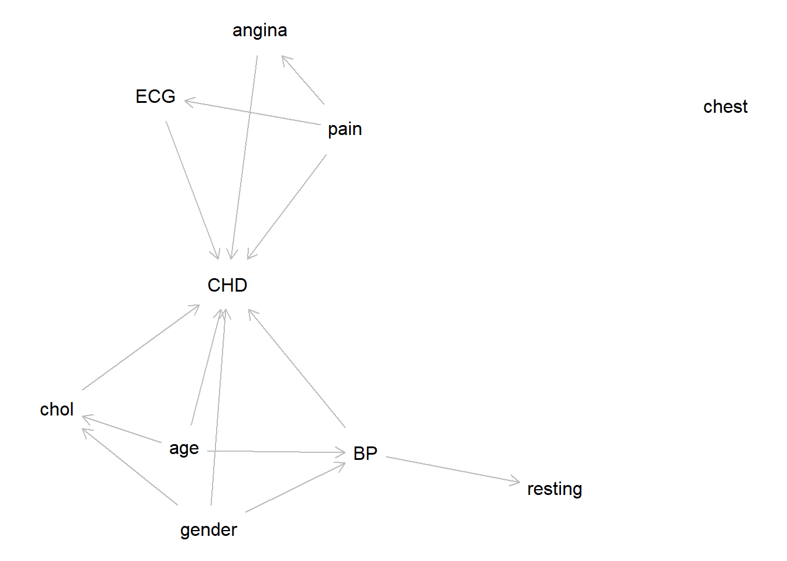
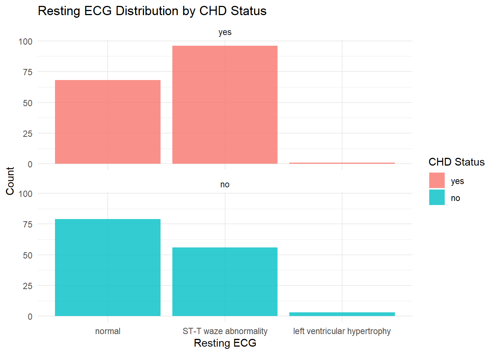

library(tidyverse)
library(broom)
library(readr)
library(gtsummary)
library(corrplot)
library(caret)
library(mfp)
library(ggplot2)
library(generalhoslem)
library(ResourceSelection)
library(dagitty)
library(DescTools)
library(dplyr)
library(knitr)Multiple Logistic Regression
Workflow
Introduction
Methodology
Prepare data
Research question
Variable selection
Read data
View data
Describe data
Explore data
Estimation
Model selection
Prediction
Model checking
Presentation
Interpretation
Introduction
We intend to analyze data related to cardiac features of patients from the “heart.xlsx” dataset. This dataset provides various information about patients, including age, gender, chest pain type, blood pressure, cholesterol levels, resting electrocardiographic (ECG) features, and more. We will attempt to create multivariate model to pinpoint the risk factors of heart disease as well as predict overall risk.
Methodology
We will use multiple logistic regression model approach to analyse predictors to explain variation of CHD in sample population. Variables will be selected based on a Directed Acyclic Graph (DAG). Following variable selection, the first model will consist of a univariate analysis of the selected variables. Second model consists of multivariate of the selected variables and another model will be constructed by adding interaction term between age and gender as there might be a non-additive effect of age and gender on the likelihood of CHD, meaning the combined effect of these two variables is not simply the sum of their separate effects. Model comparison will be executed using anova test to select the final model. Model assessment will be conducted by running the diagnostic plot and checking the model for any influential observation before final model is concluded.
Prepare Data
Research Question
Is there any association between age, gender, chest pain type, resting blood pressure, cholesterol level, resting ECG, and exercise-induced angina with CHD in an adult population?
Variable Selection
# Load the dagitty package
library(dagitty)
# Define the DAG
DAG <- dagitty ('dag {
chest pain type [pos="0.622,0.140"]
cholesterol level [pos="0.224,0.384"]
exercise-induced angina [pos="0.802,0.274"]
resting BP [pos="0.408,0.519"]
resting ECG [pos="0.591,0.586"]
CHD [pos="0.816,0.467"]
age [pos="0.263,0.120"]
gender [pos="0.471,0.140"]
chest pain type -> exercise-induced angina
chest pain type -> resting ECG
chest pain type -> CHD
cholesterol level -> CHD
exercise-induced angina -> CHD
resting BP -> resting ECG
resting BP -> CHD
resting ECG -> CHD
age -> cholesterol level
age -> resting BP
age -> CHD
gender -> cholesterol level
gender -> resting BP
gender -> CHD
}')
# Visualize the DAG
plot(DAG)
Read Data
library(readxl)
CHD <- read_excel("heart.xlsx")View Data
library(dplyr)
glimpse(CHD)Rows: 303
Columns: 8
$ age <dbl> 63, 37, 41, 56, 57, 57, 56, 44, 52, 57, 54, 48…
$ gender <chr> "female", "female", "male", "female", "male", …
$ chest_pain_type <chr> "asymptomatic", "non-anginal pain", "atypical …
$ blood_pressure <dbl> 145, 130, 130, 120, 120, 140, 140, 120, 172, 1…
$ chol <dbl> 233, 250, 204, 236, 354, 192, 294, 263, 199, 1…
$ resting_ecg <chr> "normal", "ST-T waze abnormality", "normal", "…
$ exercise_induced_angina <chr> "no", "no", "no", "no", "yes", "no", "no", "no…
$ CHD <chr> "yes", "yes", "yes", "yes", "yes", "yes", "yes…Describe Data
Convert “character” into “factor” variable
library(haven)
CHD<-
CHD %>%
mutate(across(where(is.character), as_factor))
summary(CHD) age gender chest_pain_type blood_pressure
Min. :29.00 female:207 asymptomatic : 23 Min. : 94.0
1st Qu.:47.50 male : 96 non-anginal pain: 87 1st Qu.:120.0
Median :55.00 atypical angina : 50 Median :130.0
Mean :54.37 typical angina :143 Mean :131.6
3rd Qu.:61.00 3rd Qu.:140.0
Max. :77.00 Max. :200.0
chol resting_ecg exercise_induced_angina
Min. :126.0 normal :147 no :204
1st Qu.:211.0 ST-T waze abnormality :152 yes: 99
Median :240.0 left ventricular hypertrophy: 4
Mean :246.3
3rd Qu.:274.5
Max. :564.0
CHD
yes:165
no :138
Explore Data
For continuous data: We employ histograms to gain insight into the distribution of each feature. This allows us to understand the central tendency, spread, and shape of the dataset’s distribution.
age
ggplot(CHD, aes(x = age, fill = factor(CHD))) + geom_histogram(bins = 30, alpha = 0.7, position = "identity") + facet_wrap(~ CHD) + labs(title = "Age Distribution by CHD Status", x = "Age", y = "Count", fill = "CHD Status") + theme_minimal()
resting blood pressure
ggplot(CHD, aes(x = blood_pressure, fill = factor(CHD))) + geom_histogram(bins = 30, alpha = 0.7, position = "identity") + facet_wrap(~ CHD) + labs(title = "Resting Blood Pressure Distribution by CHD Status", x = "Resting Blood Pressure", y = "Count", fill = "CHD Status") + theme_minimal()
cholesterol level
ggplot(CHD, aes(x = chol, fill = factor(CHD))) + geom_histogram(bins = 30, alpha = 0.7, position = "identity") + facet_wrap(~ CHD) + labs(title = "Resting Blood Pressure Distribution by CHD Status", x = "Cholesterol level", y = "Count", fill = "CHD Status") + theme_minimal()
For categorical data: Bar plots are utilized to visualize the frequency of each category. This provides a clear representation of the prominence of each category within the respective feature.
gender
ggplot(CHD, aes(x = gender, fill = CHD)) + geom_bar(position = "dodge", alpha = 0.8) + facet_wrap(~ factor(CHD), nrow = 1) + labs(title = "Gender Distribution by CHD Status", x = "Gender", y = "Count", fill = "CHD Status") + theme_minimal()
chest pain type
ggplot(CHD, aes(x = chest_pain_type, fill = CHD)) + geom_bar(position = "dodge", alpha = 0.8) + facet_wrap(~ factor(CHD), nrow = 5) + labs(title = "Chest pain type Distribution by CHD Status", x = "Chest Pain Type", y = "Count", fill = "CHD Status") + theme_minimal()
resting ECG
ggplot(CHD, aes(x = resting_ecg, fill = CHD)) + geom_bar(position = "dodge", alpha = 0.8) + facet_wrap(~ factor(CHD), nrow = 2) + labs(title = "Resting ECG Distribution by CHD Status", x = "Resting ECG", y = "Count", fill = "CHD Status") + theme_minimal()
exercise-induce angina
ggplot(CHD, aes(x = exercise_induced_angina, fill = CHD)) + geom_bar(position = "dodge", alpha = 0.8) + facet_wrap(~ factor(CHD), nrow = 1) + labs(title = "Exercise-induced angina Distribution by CHD Status", x = "Exercise-induced Angina", y = "Count", fill = "CHD Status") + theme_minimal()
Estimation
Univariate Analysis
age (age)
SLR.age <- glm(CHD ~ age, data = CHD, family = binomial) summary(SLR.age)Call: glm(formula = CHD ~ age, family = binomial, data = CHD) Coefficients: Estimate Std. Error z value Pr(>|z|) (Intercept) -3.03623 0.75639 -4.014 5.97e-05 *** age 0.05235 0.01363 3.841 0.000122 *** --- Signif. codes: 0 '***' 0.001 '**' 0.01 '*' 0.05 '.' 0.1 ' ' 1 (Dispersion parameter for binomial family taken to be 1) Null deviance: 417.64 on 302 degrees of freedom Residual deviance: 401.86 on 301 degrees of freedom AIC: 405.86 Number of Fisher Scoring iterations: 4gender (gender)
SLR.gender <- glm(CHD ~ gender, data = CHD, family = binomial) summary(SLR.gender)Call: glm(formula = CHD ~ gender, family = binomial, data = CHD) Coefficients: Estimate Std. Error z value Pr(>|z|) (Intercept) 0.2036 0.1397 1.457 0.145 gendermale -1.3022 0.2740 -4.752 2.01e-06 *** --- Signif. codes: 0 '***' 0.001 '**' 0.01 '*' 0.05 '.' 0.1 ' ' 1 (Dispersion parameter for binomial family taken to be 1) Null deviance: 417.64 on 302 degrees of freedom Residual deviance: 392.80 on 301 degrees of freedom AIC: 396.8 Number of Fisher Scoring iterations: 4chest pain type (chest_pain_type)
SLR.chest_pain <- glm(CHD ~ chest_pain_type, data = CHD, family = binomial) summary(SLR.chest_pain)Call: glm(formula = CHD ~ chest_pain_type, family = binomial, data = CHD) Coefficients: Estimate Std. Error z value Pr(>|z|) (Intercept) -0.8267 0.4532 -1.824 0.068116 . chest_pain_typenon-anginal pain -0.5171 0.5248 -0.985 0.324495 chest_pain_typeatypical angina -0.6897 0.5838 -1.181 0.237491 chest_pain_typetypical angina 1.8075 0.4905 3.685 0.000229 *** --- Signif. codes: 0 '***' 0.001 '**' 0.01 '*' 0.05 '.' 0.1 ' ' 1 (Dispersion parameter for binomial family taken to be 1) Null deviance: 417.64 on 302 degrees of freedom Residual deviance: 331.70 on 299 degrees of freedom AIC: 339.7 Number of Fisher Scoring iterations: 4resting blood pressure (blood_pressure)
SLR.bp <- glm(CHD ~ blood_pressure, data = CHD, family = binomial) summary(SLR.bp)Call: glm(formula = CHD ~ blood_pressure, family = binomial, data = CHD) Coefficients: Estimate Std. Error z value Pr(>|z|) (Intercept) -2.409327 0.904136 -2.665 0.0077 ** blood_pressure 0.016929 0.006802 2.489 0.0128 * --- Signif. codes: 0 '***' 0.001 '**' 0.01 '*' 0.05 '.' 0.1 ' ' 1 (Dispersion parameter for binomial family taken to be 1) Null deviance: 417.64 on 302 degrees of freedom Residual deviance: 411.22 on 301 degrees of freedom AIC: 415.22 Number of Fisher Scoring iterations: 4cholesterol level (chol)
SLR.chol <- glm(CHD ~ chol, data = CHD, family = binomial) summary(SLR.chol)Call: glm(formula = CHD ~ chol, family = binomial, data = CHD) Coefficients: Estimate Std. Error z value Pr(>|z|) (Intercept) -1.001617 0.571467 -1.753 0.0797 . chol 0.003338 0.002269 1.471 0.1412 --- Signif. codes: 0 '***' 0.001 '**' 0.01 '*' 0.05 '.' 0.1 ' ' 1 (Dispersion parameter for binomial family taken to be 1) Null deviance: 417.64 on 302 degrees of freedom Residual deviance: 415.43 on 301 degrees of freedom AIC: 419.43 Number of Fisher Scoring iterations: 4resting ECG (resting_ecg)
SLR.ecg <- glm(CHD ~ resting_ecg, data = CHD, family = binomial) summary(SLR.ecg)Call: glm(formula = CHD ~ resting_ecg, family = binomial, data = CHD) Coefficients: Estimate Std. Error z value Pr(>|z|) (Intercept) 0.1499 0.1654 0.906 0.36472 resting_ecgST-T waze abnormality -0.6889 0.2359 -2.921 0.00349 ** resting_ecgleft ventricular hypertrophy 0.9487 1.1665 0.813 0.41606 --- Signif. codes: 0 '***' 0.001 '**' 0.01 '*' 0.05 '.' 0.1 ' ' 1 (Dispersion parameter for binomial family taken to be 1) Null deviance: 417.64 on 302 degrees of freedom Residual deviance: 407.53 on 300 degrees of freedom AIC: 413.53 Number of Fisher Scoring iterations: 4exercise-induced angina (exercise_induced_angina)
SLR.angina <- glm(CHD ~ exercise_induced_angina, data = CHD, family = binomial) summary(SLR.angina)Call: glm(formula = CHD ~ exercise_induced_angina, family = binomial, data = CHD) Coefficients: Estimate Std. Error z value Pr(>|z|) (Intercept) -0.8287 0.1522 -5.444 5.21e-08 *** exercise_induced_anginayes 2.0239 0.2825 7.164 7.82e-13 *** --- Signif. codes: 0 '***' 0.001 '**' 0.01 '*' 0.05 '.' 0.1 ' ' 1 (Dispersion parameter for binomial family taken to be 1) Null deviance: 417.64 on 302 degrees of freedom Residual deviance: 357.90 on 301 degrees of freedom AIC: 361.9 Number of Fisher Scoring iterations: 4
#create a summary table for each model with confidence intervals
tbl_age <- tbl_regression(SLR.age, exponentiate = TRUE, conf.level = 0.95)
tbl_gender <- tbl_regression(SLR.gender, exponentiate = TRUE, conf.level = 0.95)
tbl_chest_pain <- tbl_regression(SLR.chest_pain, exponentiate = TRUE, conf.level = 0.95)
tbl_bp <- tbl_regression(SLR.bp, exponentiate = TRUE, conf.level = 0.95)
tbl_chol <- tbl_regression(SLR.chol, exponentiate = TRUE, conf.level = 0.95)
tbl_ecg <- tbl_regression(SLR.ecg, exponentiate = TRUE, conf.level = 0.95)
tbl_angina <- tbl_regression(SLR.angina, exponentiate = TRUE, conf.level = 0.95)
#Combine all tables into one
SLR_table <- tbl_stack(
list(tbl_age, tbl_gender, tbl_chest_pain, tbl_bp, tbl_chol, tbl_ecg, tbl_angina)
) %>%
as_gt() %>%
gt::tab_header(
title = "Simple Logistic Regression Model"
)
#Print the summary table
SLR_table| Simple Logistic Regression Model | |||
|---|---|---|---|
Characteristic |
OR 1 |
95% CI 1 |
p-value |
| age | 1.05 | 1.03, 1.08 | <0.001 |
| gender | |||
| female | — | — | |
| male | 0.27 | 0.16, 0.46 | <0.001 |
| chest_pain_type | |||
| asymptomatic | — | — | |
| non-anginal pain | 0.60 | 0.22, 1.75 | 0.3 |
| atypical angina | 0.50 | 0.16, 1.61 | 0.2 |
| typical angina | 6.10 | 2.41, 16.9 | <0.001 |
| blood_pressure | 1.02 | 1.00, 1.03 | 0.013 |
| chol | 1.00 | 1.00, 1.01 | 0.14 |
| resting_ecg | |||
| normal | — | — | |
| ST-T waze abnormality | 0.50 | 0.32, 0.80 | 0.003 |
| left ventricular hypertrophy | 2.58 | 0.32, 52.9 | 0.4 |
| exercise_induced_angina | |||
| no | — | — | |
| yes | 7.57 | 4.41, 13.4 | <0.001 |
| 1
OR = Odds Ratio, CI = Confidence Interval |
|||